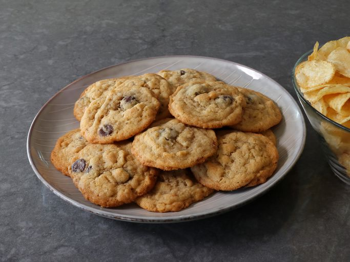

Description
These potato chip cookies are the most delicious and texturally
fascinating chocolate chip cookies you’ll ever bake.
They don’t
taste like potatoes, in case you were concerned about that.
The potato chips add flavor that pairs perfectly
with the dark chocolate,
and add a gorgeous color to the cookie—but it’s the texture that makes them truly irresistible.
Ingredients
- 2 1/4 cups all-purpose flour
- 1 teaspoon baking soda
- 2 teaspoon salt
- 1 cup very soft unsalted butter (2 sticks)
- 1 cup white sugar
- 1/2 cup light brown sugar
- 1 large egg
- 2 tablespoons milk
- 1 teaspoon pure vanilla extract
- 2 cups lightly crushed potato chips
- 1 cup dark chocolate chips
Directions
-
Whisk flour, baking soda, and salt together in a bowl; set aside.
-
Beat butter, white sugar, and brown sugar together.
- Stir potato chips and chocolate chips in with a spatula until just combined.
- Wrap and chill dough for about 30 minutes.
- Preheat the oven to 375 degrees F (190 degrees C).
- Scoop dough by rounded tablespoons onto the prepared baking sheet.
- Bake in the preheated oven until outside edges of cookies are lightly browned, about 12 minutes.